| 日付 | 2009年11月21日（土） |
|---|---|
| 山域 | 奥秩父 |
| メンバー | グループ（男4女2） |
| 山行形態 | 日帰り |
| アクセス | 電車、タクシー、バス |
| ルート (Map) | 乾徳山登山口→国師ヶ原→扇平→乾徳山→国師ヶ原→道満山→乾徳山登山口 |
奥秩父にある岩山・乾徳山に山仲間数名で行くことにする。
2年ほど前に一度行ったことがある山だ。
本日は快晴なので、前回来た時よりも大展望が広がるだろう。
このコースはバスの始発と終発の間の時間がコースタイムよりも短い。
単独ならまだしも6名山行では危険なので、
行きはバスより一足速くタクシーで移動する。
8:45 乾徳山登山口到着。標高940m。
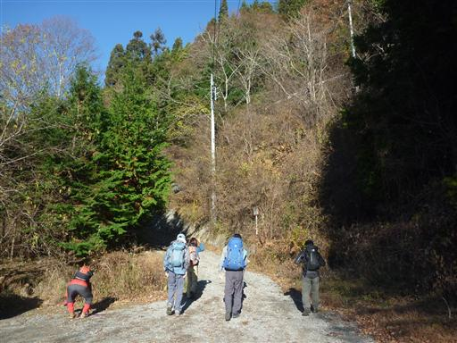
最初は樹林帯の中を登って行く。
乾徳山といえば岩山のイメージがあるが、意外に樹林帯の中の登りが長い。
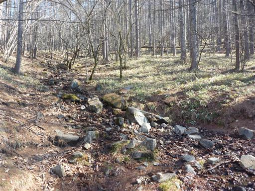
国師ヶ原に到着すると、乾徳山の山頂部分が見えてくる。
期待通りの快晴だ。
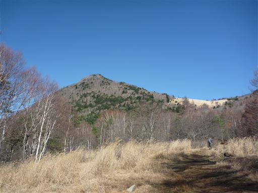
付近の木はすっかり葉を落としている。
何の木か分からないが赤い実がなっている。
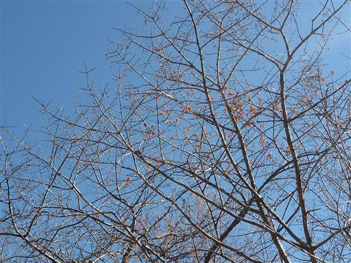
振り返ると美しい富士の姿が望める。
そういえば富士山を眺めるのは久しぶりだ。
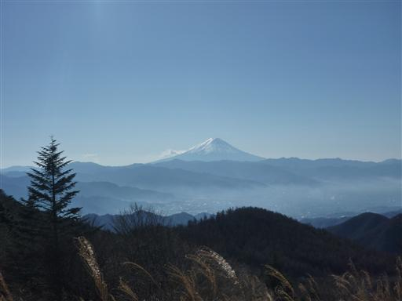
この辺りは一面ススキの原が広がっている。
遠くに見えるのは真白に冠雪した南アルプスだ。
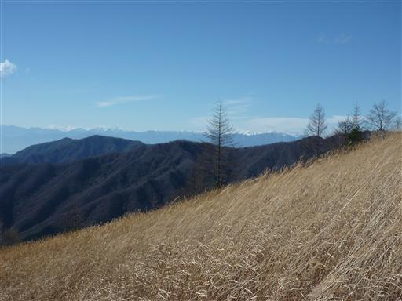
この山は標高2000mを越える。
南の方にある山とはいえ、この季節だと日陰には雪が残っている。
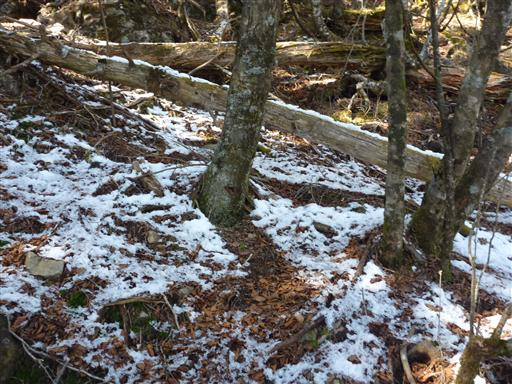
傾いている大岩を支える細い枝、のように見せかけられている。
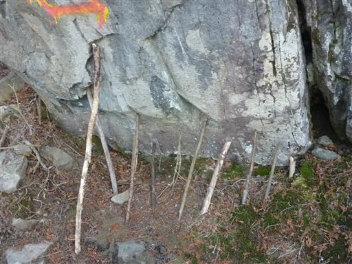
山頂近くになって、ようやく鎖場が出てくる。
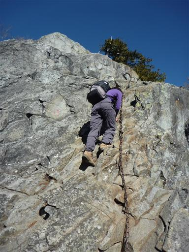
眼下には黄金色に染まったススキの原が見えている。
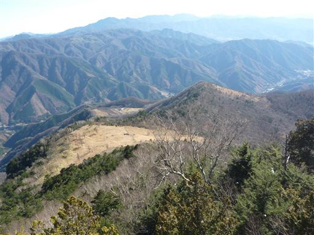
山頂直下の最後の岩峰が見えてきた。
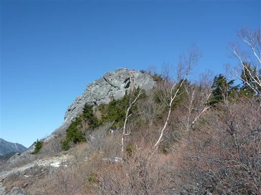
鎖場は少し混雑している。ほとんど垂直で手がかりも無い岩場との記憶があったが、
今になって見てみると傾斜はそれほどきつくなく、クラックがあるので手足もかけられる。
結局鎖を使わずに登ることができた。
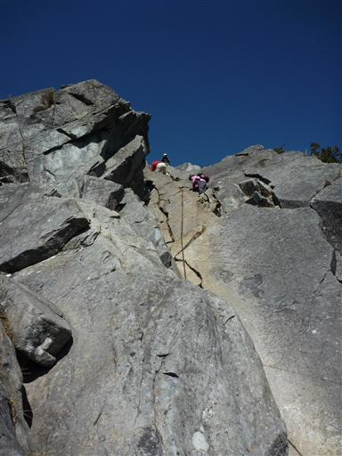
11:53 乾徳山山頂到着。標高2031m。
前回来た時ほど山頂は混雑していない。しかし、遮るものの無い山頂は結構寒い。
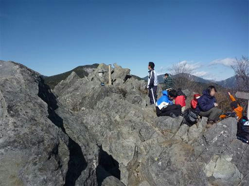
山頂からは奥秩父方面の展望が広がる。
甲武信ヶ岳、破風山などが連なっている。
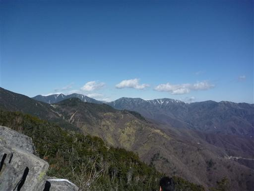
一際大きく見えるのは国師ヶ岳と北奥千丈岳。
北奥千丈岳は奥秩父の最高峰だ。左の方にはわずかに金峰山が見える。
山頂から少し北にある岩峰で腰を下ろして昼食をとる。
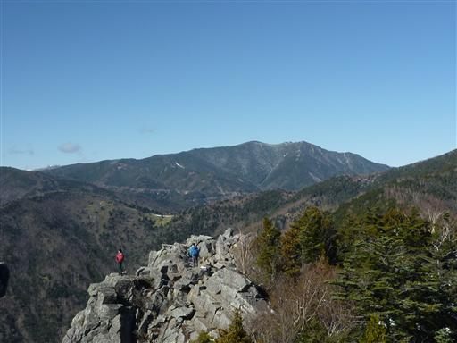
下山は北側斜面なので雪が多い。
特に山頂直下の岩場は雪が付いていて嫌らしいところだった。
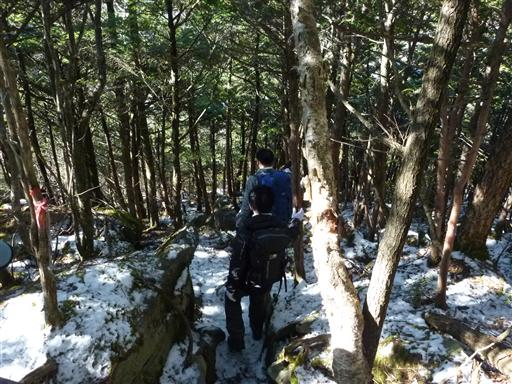
標高を下げていくと、奥秩父らしい苔むした針葉樹林帯になる。
登りに使った道とは景観が全く異なる。
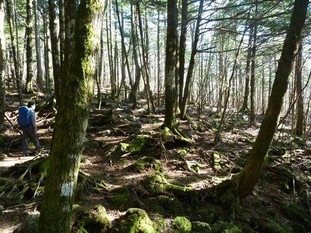
15:33 乾徳山登山口バス停到着。標高830m。
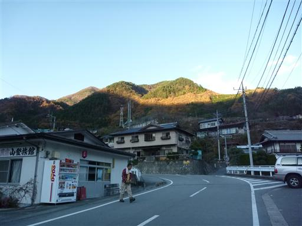
バスに乗って温泉に向かう。
背後には夕日を浴びる乾徳山が一際目立っている。
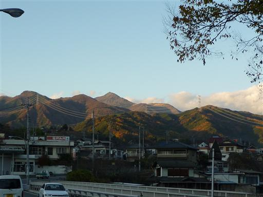
はやぶさ温泉に到着。手頃な大きさの温泉施設だ。
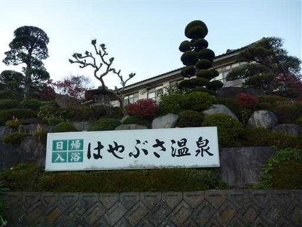